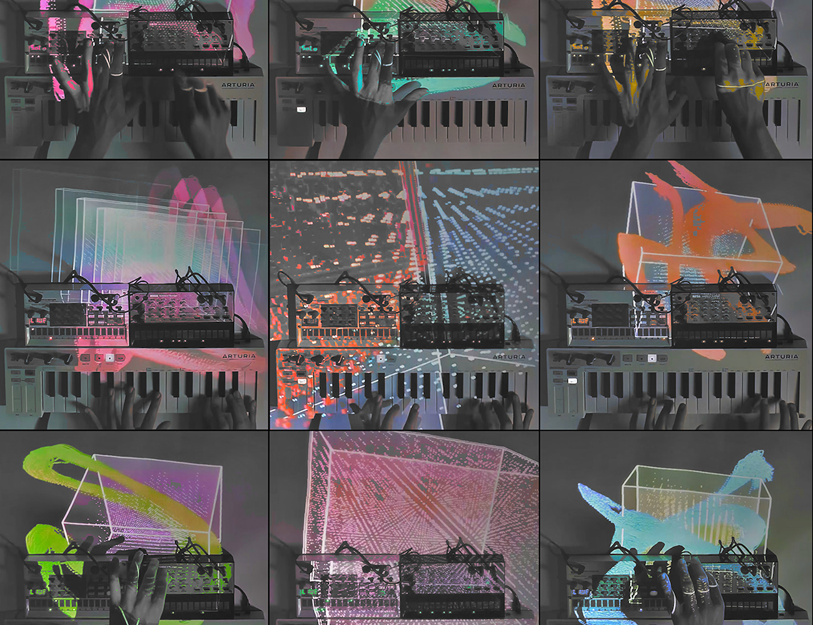

All play and no work
Mixed Media
Experimentation and play are a vital part of Non-Linear. Many of the skills and techniques that I apply in my work were honed by building/developing these self-initiated projects. They vary widely in medium and format, from interactive audio-visual sketches and custom MIDI instruments/contraptions to snippets of generative code and light studies. The beauty of experimenting with tech & code is that you'll never know where the process takes you, and this is what the philosophy of "Non-Linear" is fundamentally based on.
Audio Visual Jams
Non-Linear's origins lie in the world of music and live interactive visuals. Being a part-time music producer, this was the canvas that was most accessible to me at the time. Using MIDI and sound data to control visuals live was also a great training ground to hone my creative coding skills and explore some simple projection mapping layouts.
AV 1
GLSL Experiments
Some experiments in the fascinating yet intimidating world of GLSL. Playing around with smoothing functions, gradients and some polynomial equations, I mashed up some mesmerising and surreal-looking visual patterns. In "GLSL 2", I used some GLSL shaders and mapped them onto a sphere along with transparency maps (illustrated in video no. 2).
GLSL 1
Light Paintings
While trying out some simple colour separation techniques with a live video feed, I was able to build a simple motion-tracking system. The process tracks the green colour from a laser pointer(or any green object for that matter) and passes it through a feedback loop to create a continuous line that follows the path of the laser. Using this technique, I collaborated with Nisarg Bhatt - who creates some beautiful one-line sketches. We recorded some footage of Nisarg creating some light paintings on a wall.
Caustics Experiments
Some caustics and dispersion studies were done by projecting some simple lines and gradient-based patterns onto a glass prism and acrylic crystal. The caustics created when a bright light shines through these objects make some intricate patterns - similar to the ripple-like lighting that is found at the bottom of a swimming pool. I've always been fascinated by this phenomenon, and these experiments were attempts to recreate some interesting visual patterns using fixed optics and animated light patterns.
Plucked Resistors
Perhaps the best example of happy mistakes, was while testing my electronic circuits for the windchime sequencer, I accidentally wrote some code where I interchanged some functions and found a pleasant surprise when I proceeded to the testing. And that's how this little idea for a resistor-based plucked string MIDI controller came into being. The resistors are a functional part of the circuit, but the string can technically be plucked at any conductive part of the circuit. The resistors are plugged into the input pins of an Arduino, and the wire that I use to pluck is connected to +5V. When the plucking wire comes into contact with a resistor, the circuit is closed and sends data to produce the sound. The major difference here is that (like a string instrument) the sound is produced when the micro-controller detects a falling edge signal. Meaning, the sound is triggered when the wire loses contact with the resistors, giving the illusion of a plucked string. MIDI data is then sent to the computer and can be quantized to any scale of choice.
Projection Mapping Tests
2D projections on a 3D object. One of the first examples of me trying out some simple projection mapping techniques. The content that was projected is all planar and is mapped onto the three front faces of the cube.
All play and no work
Mixed Media / Experiments
Photographs / Video
Dennis Peter
Experimentation and play are a vital part of Non-Linear. Many of the skills and techniques that I apply in my work were honed by building/developing these self-initiated projects. They vary widely in medium and format, from interactive audio-visual sketches and custom MIDI instruments/contraptions to snippets of generative code and light studies. The beauty of experimenting with tech & code is that you'll never know where the process takes you, and this is what the philosophy of "Non-Linear" is fundamentally based on.